조경기사 (2004-03-07 기출문제)
1과목: 조경사
1. 일본 헤이안(平安)시대는 정토(淨土)신앙사상이 정원과 건축에 영향을 미쳤다. 이러한 사상을 나타낸 대표적인 것은?
- 천용사(天龍寺), 서방사(西芳寺)
- 금각사(金閣寺), 은각사(銀閣寺)
- 용안사(龍安寺), 대덕원(大德院)
- 모월사(毛越寺), 무량광원(無量光院)
(정답률: 53%)

2. 페르시아의 이스파한(Isfahan) 왕궁의 정원묘사에 해당하지 않는 것은?
- 마이단이라 부르는 380m × 140m나 되는 장방형의 광장이있다.
- 도로와 도로가 교차되는 지점에 분천이나 화단이 만들어졌다.
- 체하르 바(Tshehar Bagh)라고 불리는 7㎞의 넓은 도로가 있다.
- 도로 중앙에 노단과 수로 및 연못이 있고 양가에 가로수가 심겨져 있다.
(정답률: 64%)
3. 중세 장원제도(feudal system)속에서 발달된 조경양식의 특징은 아래 중 어떤 것인가?
- 내부공간 지향적 정원 수법
- 로마시대의 공지 형태 답습
- 성벽을 의식한 장대한 외부 경관의 조성
- 풍경식의 도입이 보임
(정답률: 79%)
4. Villa Madama의 설명 중 적당치 않은 것은?
- Raffaello가 설계하였으나 그의 사후 조수인 상갈로(Sangallo) 등에 의해 완성되었다
- 최초의 노단 건축식 수법으로 이태리 조경의 전환기가 되었다
- 기하학적인 곡선을 따라서 광대한 식재원을 건물 주위에 배치하였다
- 주건물과 옥외 외부공간을 하나의 유니트로 설계하여 시각적으로 완전히 결합시켰다
(정답률: 48%)
5. 일본 정원양식 변천과정으로 볼 때 근· 현대 문화에 가장 많은 영향을 끼친 시대는 언제인가?
- 헤이안(平安)시대
- 무로마치(室町)시대
- 카마구라(鎌倉)시대
- 에도(江戶)시대
(정답률: 66%)
6. 다음 중 방지(方池) 방도(方島)형의 연못형태를 갖추고 있지 않은 것은?
- 선교장 활래정 연못
- 부용동 세연지
- 경회루 연못
- 청평사 문수원 정원 영지
(정답률: 50%)
7. 이탈리아 - 르네상스식 정원 가운데에서 바로크식 정원의 특징을 지닌 대표적인 정원이다. 옳지 않은 것은?
- 토스카나장
- 이졸라 벨라장
- 알도 브란디니장
- 란셀롯티장
(정답률: 65%)
8. 다음 중국 정원에 관한 설명 중 옳지 않은 것은?
- 중국정원의 특징은 항상 변화와 대비에 둔다.
- 중국정원의 부지(敷地)는 전정(前庭), 중정(中庭), 후정(後庭)의 3가지로 나눈다.
- 중국정원의 전성기(全盛期)는 청(淸)나라 시대이다.
- 중국정원은 축경적(縮景的)이고,낭만적이며,공상적(空想的)세계를 구상화(具象化)한 것이다.
(정답률: 70%)
9. 다음 설명 중 옳지 못한 것은?
- 미국에서 전원도시(田園都市)운동은 20 C초에 시작 되었다.
- 래드번(Radburn)은 쿨-데-삭(cul-de-sac)의 원리를 정원에 적용했다.
- 뉴욕(New York)의 센트럴파크(Centeral Park)는 죠셉팩스톤(Joseph Paxton)과 옴스테드(Olmsted)의 공동 작품이다.
- 레취워츠(Letchworth)와 웰윈(Welwyn)은 영국의 전원도시이다.
(정답률: 81%)
10. 영국의 정원양식에 관한 사실이 올바르게 연결된 것은?
- 미로원(迷路園:labyrinth) - 정자목(Topiary)
- 멜보른 홀(Melbourne Hall) - 침상원(Sunken Garden)
- 르노트르(Le Notre) - 햄턴코트(Hampton Court)
- 란셀로트 브라운(Lancelot Brown) - 은폐호(fosse)
(정답률: 55%)
11. 아도니스(Adonis)원에 대한 설명이 잘못된 것은?
- 아도니스에 대한 경배는 바빌로니아, 앗시리아, 페니키아인들에 의해 전하여 오던 것이 그리스로 이어졌다.
- 아도니스는 죽음과 사후의 영생을 상징한다.
- 신이 인간을 짝사랑하고 그의 죽음에 대한 애절한 전설을 가지고 있다.
- 후에 옥상정원, 건물 테라스원, Pot Garden 등에 영향을 미쳤다.
(정답률: 42%)
12. 우리나라의 현대 정원을 설명한 내용 중 맞지 않은 것은?
- 실생활의 실용적인 생활면과 감상면을 겸한 조경
- 과학적인 근거에 의하여 분석하고 계획하는 조경
- 전원식(前園式)에서 후원식(後園式)으로 옮겨진 조경
- 향토 민속 보존과 국토 자연 보호를 중요시 하는 조경
(정답률: 58%)
13. 다음은 누각과 정자의 차이점에 대한 설명이다. 잘못된 것은?
- 누각은 공적으로 이용하던 공간이고 정자는 사적으로 이용하던 공간이다.
- 누각은 대부분 방이 있으며 폐쇄적인 반면에 정자는 방이 없으며 개방적이다.
- 누각은 일반적으로 장방형으로 나타나는데 비해 정자는 다양한 형태로 나타난다.
- 누각은 주로 지방의 수령들에 의해 조영되는 반면에 정자는 다양한 계층에 의해 조영되었다.
(정답률: 65%)
14. 르네상스시대 프랑스와 이탈리아 조경의 차이점이 아닌 것은?
- 프랑스는 성관이 발달한데 반해 이탈리아는 빌라의 대발달을 보게 되었다.
- 프랑스는 중세의 방어요소인 호를 호수와 같은 장식적 수경으로 전환시킨 반면에 이탈리아는 캐스케이드 , 분수, 물풍금 등의 다이나믹한 수경을 나타내고 있었다.
- 프랑스 정원은 이탈리아 정원보다 파르테르를 중요시 하였다.
- 프랑스 정원은 경사지에 옹벽에 의해서 지지된 테라스나 평탄한 지역들이 만들어졌으며, 다양한 형태의 계단 혹은 연속적인 계단 그리고 경사로로 연결되었다.
(정답률: 78%)
15. 안압지에 대한 설명이다. 맞지 않은 것은?
- 삼국사기와 동사강목에서 기록을 볼 수 있다.
- 당나라 장안성의 금원을 모방하였으며, 삼신산을 축조하였다
- 북쪽호안과 석가산 앞에 해당되는 동쪽호안은 직선형 형태이다.
- 바닥은 강회로 처리하였다.
(정답률: 45%)
16. 우리나라 정원 양식의 사상적 배경은?
- 유교사상 + 도교사상
- 불교사상 + 풍수지리설
- 신선사상 + 음양사상
- 유교사상 + 삼재사상
(정답률: 60%)
17. 중국 낙양(洛陽)의 교외 평천(平泉)에 화려한 정원을 꾸며 놓고 "평천산거계자손기(平泉山居戒子孫記)에 먼 후세에라도 평천을 팔아 넘기는 자는 내자손이 아니다"라는 기록을 남긴 사람은?
- 당(唐)의 대종(代宗)
- 백낙천(白樂天)
- 사마광(司馬光)
- 이덕유(李德裕)
(정답률: 74%)
18. T.V.A에 대한 설명 가운데 적당한 것이 아닌 것은?
- 미국 최초의 광역지방계획
- 수자원개발의 효시이자 지역개발의 효시
- 최초의 광역공원계통
- 계획· 설계과정에 조경가들이 대거 참여
(정답률: 61%)
19. 이슬람 정원에 관한 설명 중 옳지 않은 것은?
- 기후적 조건으로 중정이 발달했다.
- 풍부한 물을 이용, 케스케이드, 분수, 벽천 등이 크게 발달했다.
- 국교인 회교와 관련된 파라다이스 개념이 정원내의 수로(水路) 등에 표현되었다.
- 이슬람 세력의 동진(東進)으로 인도 무갈제국 정원 발달에 기여했다.
(정답률: 75%)
20. Egypt 문명과 Mesopotamia 문명은 같은 연대이면서 대립적 조경문화를 생성하였다.다음 중 Mesopotamia 조경은?
- 귀족원
- 수렵원
- 정형식 정원
- 실용원
(정답률: 80%)
2과목: 조경계획
21. 전정광장(前庭廣場:forecourt)의 설계시 옳지 못한 것은?
- 공적(公的) 외부공간인 도로와 사적(私的) 내부공간인 건물 사이에 있는 전이적 공간이 되게 한다.
- 보행인 출입을 위주로한 단순한 공간이 되도록 한다.
- 반드시 녹지로 덮히거나 수목을 심을 필요는 없다.
- 분수 등으로 초점적경관(focal landscape)을 만들어 특색을 살리기도 한다.
(정답률: 44%)
22. 다음 중 외부공간을 모호한 공간, 한정된 공간, 닫혀진 공간으로 구분한 사람은?
- 틸(Thiel)
- 할프린(Halprin)
- 린치(Lynch)
- 아이버슨(Iverson)
(정답률: 48%)
23. 도시공원의 기능상 분류로 틀린 것은?
- 어린이공원
- 근린공원
- 운동공원
- 묘지공원
(정답률: 49%)
24. 환경설계에서 속도 혹은 움직임의 중요성을 주장한 사람이 아닌 것은?
- 할프린(Halprin)
- 아버나티(Abernathy)
- 노(Noe)
- 스타이니츠(Steinitz)
(정답률: 52%)
25. 공원내 자전거 전용도로의 설계시 자전거가 양방향으로 달릴 수 있는 최소한의 폭은?
- 1.25m
- 1.65m
- 1.95m
- 2.40m
(정답률: 50%)
26. 자연공원법에 명시된 국립공원 지역내에서 공원 용도지구에 포함되지 않는 것은?
- 자연보존지구
- 자연환경보전지구
- 밀집취락지구
- 집단시설지구
(정답률: 25%)
27. 다음 중 우리나라 중부지방에서 태양복사열을 가장 많이 받는 장소는?
- 동향 - 남동향 사이의 20% 경사면
- 남동향 - 남향 사이의 20% 경사면
- 남향 - 남서향 사이의 40% 경사면
- 서향 - 북향 사이의 40% 경사면
(정답률: 67%)
28. 다음은 리조트 구성에 대한 설명이다. 틀린 것은?
- 숙박, 레크리이션, 각종 서비스 기능이 통행권 내에 자리 잡는다.
- 일반적으로 리조트의 동시 숙박 수용능력은 ha 당 30 - 50명정도가 적합하다.
- 토지 이용형태는 숙박과 서비스 시설을 가장 많이하며 원지, 완충녹지와 도로의 순으로 한다.
- 이용의 자유도가 높은 잔디 원지를 크게 잡는 것이 바람직하다.
(정답률: 41%)
29. 우리 고유의 전통조경계획 개념을 계승, 발전시키는 것이 우리나라 현대조경의 주요 과제라면 어떤 것이 그 대상이 되어야 하겠는가?
- 외래도입 수종의 적극 보급
- 풍수지리사상에 의한 묘소 명당 자리 찾기
- 개발을 통한 자연정복을 추구하는 서양사상에 대비되는 자연과의 조화사상
- 분석적,과학적 접근보다는 직관적, 관습적 계획 접근 방법
(정답률: 68%)
30. 하나의 도시지역안에 있어서 도시공원법상 정해진 도시공원 면적의 기준으로 가장 옳은 것은? (단, 개발제한구역, 자연녹지지역, 생산녹지지역 포함)
- 당해 도시지역안에 거주하는 주민 1인당 2m2 이상으로 한다.
- 당해 도시지역안에 거주하는 주민 1인당 4m2 이상으로 한다.
- 당해 도시지역안에 거주하는 주민 1인당 6m2 이상으로 한다.
- 당해 도시지역안에 거주하는 주민 1인당 10m2 이상으로 한다.
(정답률: 60%)
31. 인간행태 연구를 위한 현장관찰의 방법을 가장 옳지 못하게 설명하고 있는 것은?
- 환경적 상황과 행위자 반응의 관계를 쉽게 이해할 수 있다.
- 시간의 흐름에 따라 변하는 연속적인 행태를 연구 할 수 있다.
- 연구자의 출현이 피관찰자의 행태에 영향을 미칠 수 있다.
- 행위자의 의도를 정확하게 알 수 있다.
(정답률: 59%)
32. 항공사진을 촬영할때는 일정 높이에서 평행되게 왕복하며 촬영한다. 이때 인접한 두 사진사이에 비행기 진행방향으로 겹쳐지는 비율은?
- 20%
- 40%
- 60%
- 80%
(정답률: 57%)
33. 다음의 서술에 가장 부합되는 조경계획의 접근 방법은?
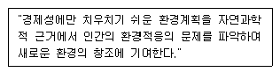
- 생태학적 접근
- 형식미학적 접근
- 기초학적 접근
- 현상학적 접근
(정답률: 53%)
34. 우리나라 아파트 단지계획시 주변의 소음도가 일정기준 초과시 방음벽 혹은 방음식재를 해야 한다. 이 소음도의 법령상 최소치는 얼마인가?
- 55데시벨
- 60데시벨
- 65데시벨
- 70데시벨
(정답률: 78%)
35. 조경이 갖는 특징을 건축, 토목, 도시계획, 도시설계와 비교하여 설명하였다. 잘못된 것은?
- 건축은 내부공간을, 조경은 외부공간을 주된 대상으로 한다.
- 토목이나 도시계획에 비교하면 조경은 미적인 측면을 강조한다.
- 도시설계에 비교하면 조경은 최종 모습이 존재하기 위한 틀을 제공한다.
- 다른 분야와는 달리, 자연의 보전과 활용에 관심을 갖는다.
(정답률: 48%)
36. 스키장의 설질(雪質)의 유지를 위하여 다음 중 가장 좋은 경사 방향은?
- 북사면
- 북동사면
- 북서사면
- 동사면
(정답률: 50%)
37. 도시공원법상 공원의 면적기준으로 올바르지 않은 것은?
- 근린생활권의 근린공원 : 10000m2이상
- 도보권의 근린공원 : 30000m2이상
- 도시계획구역권의 근린공원 : 100000m2이상
- 광역권 근린공원 : 300000m2이상
(정답률: 60%)
38. 국토이용및계획에관한법률에 의하여 지정된 지구단위계획의 내용으로 포함되어야 할 사항이 아닌 것은?
- 기반시설의 배치와 규모
- 오픈스페이스의 공간배치에 관한 계획
- 환경관리계획 또는 경관계획
- 건축물의 배치. 형태. 색채와 건축선에 관한 계획
(정답률: 43%)
39. 자연경관 분석에 있어 미기후 분석 요인으로만 묶여진 항목은?
- 향 - 바람 노출도 - 강상기류 - 계곡사면의 난대
- 지형 - 토양 - 지피상태 - 물의 유무
- 경사도 - 토양 - 강상기류 - 물의 유무
- 한계고도 - 바람노출도 - 지하수위 - 경관
(정답률: 50%)
40. 산악 국립공원지역내 입지한 고찰(古刹)지역을 관광지로 개발할 때 가장 중요시 하여야 할 사항은?
- 종교 및 문화재 보존과 관광레크레이션 기능사이에 완충 지대 형성
- 등산로와 종교 참배 동선의 원활한 연결
- 관광객의 원활한 활동을 위한 동선 및 시설배치
- 관광 레크레이션 시설들의 집약화를 위한 집단시설 지구를 형성하여 종교 활동을 보호
(정답률: 40%)
3과목: 조경설계
41. 경기장 배치에 관한 설명 중 틀린 것은?
- 축구장 - 장축은 가능한 동서방향으로 주풍향과 직교 시킨다.
- 테니스장 - 장축의 방위는 정남북으로부터 동서 5∼15° 편차내의 범위로 가능하면 코트의 장축방향과 주풍향의 방향이 일치하도록 한다.
- 배구장 - 장축을 남북방향으로 배치하며 바람의 영향을 받기 때문에 주풍방향에 수목 등의 방풍시설을 마련한다.
- 야구장 - 방위는 내외야수가 태양을 등지고 경기할 수 있도록 하고, 홈플레이트는 동쪽에서 북서쪽 사이에 자리 잡게 한다.
(정답률: 55%)
42. 경관조명시설에 관한 다음 설명 중 틀린 것은?
- 경관조명시설이란 전원이나 도시적 환경의 옥외공간에 설치되는 조명시설을 말한다.
- 경관조명시설은 설치장소, 기능, 형태에 따라 보행등 , 정원등, 공원등 등의 여러 시설분류가 있다.
- 공원등은 조도기준에 따라 중요 장소에는 5 - 30lx, 기타 장소는 1 - 10lx를 충족시키도록 설계하며 놀이 공간, 운동공간, 광장 등 휴게공간에는 6lx 이상의 밝기를 적용한다.
- 수중등은 폭포, 연못, 분수 등 수경시설의 환상적인 분위기 연출을 목적으로 물 속에 설치하며 전선에 접속점이 생기면 이중 테이프로 잘 감싸도록 하여야 한다.
(정답률: 46%)
43. 다음 약어의 설명 중 틀린 것은?
- D 10 @ 200은 지름 10 mm 인 철근을 200 mm 간격으로 배근한 것을 말한다.
- THK = 10 mm는 재료의 두께가 10 mm 인 것을 말한다.
- F.L는 Finish Level의 약자로 계획고를 말한다.
- 강판은 STS.PL.로 나타낸다.
(정답률: 53%)
44. 분수의 물리적 특성에 따른 유형별 특성에 대한 설명 중 틀린 것은?
- 바닥포장형 - 열린공간, 활동수용형 공간 조성
- 기계실형 - 다양한 프로그램, 효율적 유지관리
- 조형물형 - 다양한 디자인, 시각적 landmark
- 수조형 - 시각적 안정감, 다양한 수반형태
(정답률: 59%)
45. 1/50,000지형도에서 주곡선의 간격은?
- 10m
- 20m
- 30m
- 50m
(정답률: 67%)
46. 원로(苑路)에 있어 1인이 통행할 수 있는 소규모의 원로 폭은?
- 20 - 30㎝
- 40 - 50㎝
- 60 - 70㎝
- 120 - 150㎝
(정답률: 29%)
47. 콘크리트 인조목으로 된 휴지통이 부자연스럽게 보이는 가장 큰 이유는?
- 나무색과 같이 채색되지 못하였음
- 재료의 차이에 따른 무게가 다름
- 나무와 꼭 같은 형태가 아님
- 재료의 성질에서 나타난 형태가 아님
(정답률: 67%)
48. 설계방법론의 발달단계로 옳은 것은?
- 설계과정에 관심 → 설계는 예측과 반박으로 이루어진 다고 봄→ 설계과제에 관심→ 설계행위에 관심
- 설계과정에 관심 → 설계행위에 관심→ 설계과정에 관심→ 설계는 예측과 반박으로 이루어진다고 봄
- 설계행위에 관심 → 설계과정에 관심→ 설계는 예측과 반박으로 이루어진다고 봄→ 설계과제에 관심
- 설계과정에 관심 → 설계과제에 관심→ 설계행위에 관심→ 설계는 예측과 반박으로 이루어진다고 봄
(정답률: 40%)
49. 형태 심리학에서 말하는 단순성의 원리(principle of simplicity)에 적합한 사례는?
- 직선보다 곡선이 더 쉽게 지각된다
- 정사각형보다 불규칙 삼각형이 더 쉽게 지각된다
- 직각보다 직각이외의 각이 더 쉽게 지각된다
- 기억하기 쉬운 형태가 더 쉽게 지각된다
(정답률: 45%)
50. 산림경관의 유형 중 일시경관과 가장 관계있는 경관 변화 요인은 다음 중 어느 것인가?
- 계절
- 거리
- 관찰위치(시점)
- 기후조건 혹은 시간
(정답률: 57%)
51. 어떤 디자인에서 일정량의 변화로 극적인 효과를 얻기 위한 방법은?
- 색상차가 큰 배열로서 대비 현상을 유도한다
- 강한 차이를 피하고 중간톤의 회색배열을 시도한다
- 성질이 비슷한 요소들을 잘 조화시킨다
- 조화가 깨지지 않도록 최대한으로 고려한다
(정답률: 58%)
52. 투시도 작성에서 소점이 위치하는 곳은?
- 기선
- 화면선
- 수평선
- 시선
(정답률: 43%)
53. 표지판 설치시 고려할 사항이다. 이 중 적당치 못한 것은?
- 이용자의 집합과 분산이 이루어지는 곳에 설치한다.
- 표지판의 설치로 인하여 시선에 방해가 되어서는 안된다.
- 한장소에 서로 다른 정보를 나타내는 표지판들은 따로 따로 설치한다.
- 청소, 보수 등 유지관리 하기에 용이한 위치를 설치 한다.
(정답률: 53%)
54. 외부공간을 구성하는 기본적 요소가 아닌 것은?
- 수평적 요소
- 수직적 요소
- 선적 요소
- 천개면적 요소
(정답률: 32%)
55. 계단설계시 축상(R)상 답면(T)의 관계는 2R+T=60cm이다. 50% 경사지에 위의 식을 사용하여 계단을 설치할 때 축상 과 답면의 길이는 각각 얼마인가? (단, 계단참은 없는 것으로 한다.)
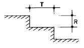
- 축상:30cm, 답면:15cm
- 축상:15cm, 답면:30cm
- 축상:10cm, 답면:40cm
- 축상:40cm, 답면:10cm
(정답률: 48%)
56. 단위형(單位形)에 어떤 규칙적 운동의 변화를 주어서 부분과 전체의 관계를 좀더 풍부하게 하는 수적변화(數的變化)를 무엇이라 하는가?
- 리듬(Rhythm, 律動)
- 변화(變化, Variety)
- 비례(比例, Proportion)
- 대조(對照, contrast)
(정답률: 34%)
57. 사람은 시각적으로 무질서와 혼돈 보다는 질서와 통일성에 대한 지각(知覺)에서 즐거움과 만족감을 느낀다. 도로나 가로망의 미적효과를 나타내기 위한 나무의 배치방법에 수반되어야 할 질서성 또는 통일성에 대한 개념은 다음 중 어떤 것을 의미 하는가?
- 도로의 선을 따라 일정한 간격마다 하나씩 심는다
- 도로 주변의 공간적 특성에 따라 식생밀도를 상대적으로 조절한다
- 커다란 간격을 두고 군식(群植)한다
- 간격, 수종, 크기 등을 획일화 시킨다
(정답률: 21%)
58. 다음 중 버라인(Berlyne)이 주장한 인간의 미적반응 과정을 옳바르게 연결 시킨 것은?
- 자극탐구 - 자극해석 - 자극선택 - 반응
- 자극탐구 - 자극선택 - 자극해석 - 반응
- 자극선택 - 자극탐구 - 반응 - 자극해석
- 자극탐구 - 자극선택 - 반응 - 자극해석
(정답률: 58%)
59. 한 도면내에서 굵은선의 굵기 기준을 0.8mm로 하였다면 레터링 보조선이나 치수선의 적절한 굵기에 해당되는 것은?
- 0.2mm
- 0.3mm
- 0.4mm
- 0.5mm
(정답률: 64%)
60. 컴퓨터 CADD(Computer Aided Design and Drafting)시스템에 포함되지 않는 기능은?
- 공간자료의 입력
- 계획의 준비 및 평가
- 계획의 프리젠테이션(Presentation)
- 수량산출자료의 입력
(정답률: 25%)
4과목: 조경식재
61. 한국의 식물군계 중에서 북부지방에 분포하는 식물군으로 되어 있는 것은?
- 자작나무, 박달나무, 떡갈나무
- 서어나무, 해송, 미선나무
- 갈참나무, 졸참나무, 측백나무
- 철쭉나무, 산초나무, 참나무
(정답률: 62%)
62. 모서리 식재기법에서 고려하지 않아도 되는 사항은?
- 키 큰 교목식재
- 강조식재
- 표본식재
- 비스타 형성 식재
(정답률: 55%)
63. 다음 지피류 가운데서 내음성이 강한 것은?
- 눈향, 원추리
- 잔디, 프록스
- 맥문동, 애기나리
- 은방울꽃, 양채송화
(정답률: 49%)
64. 품질이 가장 좋으며 주로 골프장의 그린(green)에 이용 되는 한지형 잔디는?
- Kentucky blue grass
- Bent grass
- Bermuda grass
- Fescue grass
(정답률: 58%)
65. 다음 경량재 토양에 대한 설명 중 틀리는 것은?
- 버미큐라이트(Vermiculite)는 다공질(多孔質)로서 나쁜 균이 없다.
- 퍼어라이트(Perlite)는 토양에 대하여 완충 능력이 있다
- 피트(Peat)는 이끼가 모여 된 것이므로 영양분이 다소 포함된 경량재 토양이다.
- 하이드로볼은 인공적으로 만든 토양이다.
(정답률: 44%)
66. 개체군 조절에 영향을 미치는 내적요소가 아닌 것은?
- 종내경쟁
- 이입과 이출
- 생태적이고 행동적인 변화
- 종간 경쟁
(정답률: 32%)
67. 질감과 관계되는 이론 중에서 옳지 않은 것은?
- 어린식물들은 잎이 크고, 무성하게 성장하기 때문에 성목보다 거친 질감을 갖는다.
- 질감은 식물을 바라보는 거리에 따라 결정된다.
- 두껍고 촘촘하게 붙은 잎은 고운 질감을 나타낸다.
- 부드러운 질감을 가진 식물에 의해서 생긴 그림자는 더욱 짙게 보인다.
(정답률: 56%)
68. 방화식재와 관련된 설명 중 틀린 것은?
- 침엽수의 수림이나 열식은 활엽수에 비해 방화 효과가 크다.
- 생육기의 은행나무의 방화효과는 대단히 높다.
- 상목(上木)만 식재하는 것보다는 하목(下木)을 함께 식재하는 것이 효과가 크다.
- 일정한 너비로 고르게 수목을 식재한 수림대 보다는 그 중앙부에 공지(空地)가 있는 것이 바람직하다.
(정답률: 47%)
69. 맑은 날 오후 2시의 태양고도가 45° 00'인 지대에서 25% 경사를 나타내는 남사면에 수고 10m의 느티나무가 식재 되었을때 이 나무의 그림자 길이는 얼마인가?
- 6m
- 7m
- 8m
- 9m
(정답률: 71%)
70. 도시지역에서 나비의 서식처를 위하여 식물을 도입하고자 할 때에는 나비류가 먹이로 하는 식물을 최소한 10그루 이상은 식재해 주는 것이 바람직하다. 다음 중 나비류와 먹이식물. 방화식물과의 관련성이 잘못된 것은? (순서대로 나비 - 먹이식물 - 방화식물)
- 네발나비 - 환삼덩굴 - 앵도나무, 노린재나무
- 노랑나비 - 콩 - 백일홍, 진달래
- 큰멋쟁이나비 - 느릅나무 - 엉겅퀴, 쥐손이풀
- 제비나비 - 황벽나무 - 꿀풀, 타래난초
(정답률: 32%)
71. 조경식물의 일반적인 선정 기준에 속하지 않는 것은?
- 미적, 실용적 가치가 있는 식물
- 식재지역 환경에 적응력이 큰 식물
- 재질이 좋고 경제성이 높은 것
- 이식이 용이하고 관리하기 용이한 것
(정답률: 67%)
72. 습지지역에서 수생식물은 생물다양성의 증진과 수질정화 등 다양한 기능을 수행한다. 다음 중 잘못 설명된 것은?
- 습지에서 초본식물 식재지역의 토양의 깊이는 최소한 30cm 이상은 확보되어야 한다.
- 수변부는 육지와 물이 인접하는 경계지대로 생물다양 성이 풍부한 추이대(ecotone)이다.
- 갈대는 규모가 아주 작은 연못이나 작은 계류에 식재 하면 좋다.
- 수생식물의 지나친 성장분포를 제어하기 위해서는 통나무를 촘촘히 박아주어야 한다.
(정답률: 65%)
73. 식재 시방서의 식재구덩이에 관한 내용 중 틀리는 것은?
- 지정된 장소가 식재 불가능할 경우 도급업자가 임의로 옮겨심는다
- 식재 구덩이를 팔 때에는 표토와 심토는 따로 갈라 놓아 표토를 활용할 수 있도록 조치한다.
- 묘목 구덩이는 보통 분의 크기에 1.5 배이상 되게 판다
- 식물 생육에 지장이 있는 것은 제거하고 양토를 넣고 고른다
(정답률: 75%)
74. 캔터키블루그래스가 가장 잘 자라는 pH는?
- pH 3.5 - 4.2
- pH 4.2 - 5.2
- pH 5.2 - 6.0
- pH 6.0 - 7.8
(정답률: 48%)
75. 방풍식재(防風植栽)를 하는데 있어서 잘못된 사항은?
- 능선에 방풍대를 설치한다.
- 심근성(深根性)이며, 지엽이 치밀한 것을 택한다.
- 수목 배치는 주풍(主風)에 직각이 되지 않게 한다.
- 수림대의 길이는 수고의 12배 이상이 필요하다.
(정답률: 53%)
76. 다음 그림은 수풀이 있고 없고에 따라 또는 수풀이 좋고 나쁘고에 따라 비가 온 뒤 물의 흐름의 경향을 보이는 것이다. 이 중 가장 우량한 수풀에 있어서는 물의 흘러내림이 어떠한 양상을 취하게 될 것인가?
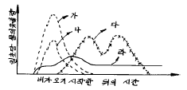
- 가
- 나
- 다
- 라
(정답률: 36%)
77. 다음의 설명 중 사실과 다른 것은?
- 후박나무는 상록성 수종이다.
- 병꽃나무는 경계식재용으로 많이 쓰인다.
- 백송의 잎은 2엽 속생이다.
- 밤나무 잎은 거치 끝의 침상에 엽록소가 있고, 상수리나무 잎은 거치 끝의 침상에 엽록소가 없어 구별이 된다.
(정답률: 36%)
78. 계절의 변화를 가장 현저하게 보여주는 수종은?
- Larix leptolepis
- Pinus densiflora
- Camellia japonica
- Taxus cuspidata
(정답률: 44%)
79. 자연공원에서 야조(野鳥)를 유치하기 위한 식물로서 적당한 수종은?
- 팽나무
- 서어나무
- 오동나무
- 전나무
(정답률: 43%)
80. 식물의 내음성을 결정하기 위한 간접적인 판단 방법이 아닌 것은?
- 수관밀도의 차이
- 자연전지의 정도와 고사의 속도
- 광도를 달리한 입지에서 생장상태의 비교
- 수고 생장속도의 차이
(정답률: 31%)
5과목: 조경시공구조학
81. 단면 1m × 2m 인 콘크리트 단면에 100tf의 압축력이 작용할 때 이 단면의 압축 응력은?
- 25 tf/m2
- 50 tf/m2
- 100 tf/m2
- 200 tf/m2
(정답률: 57%)
82. 배수계획에서 유출량과 강우량과의 비를 무엇이라고 하는가?
- 유출계수
- 강우강도
- 수문통계
- 강우계속시간
(정답률: 40%)
83. 다음은 공사관리에 관한 일반사항들이다. 이 중에서 틀린 것은?
- 품질관리는 설계도면과 시방서에 근거한다
- 품질관리와 원가관리는 상호관계가 없다
- 원가관리를 위해 실행예산을 수립하여야 한다
- PERT/CPM 의 주 목적은 공정관리에 있다
(정답률: 49%)
84. 다음의 지표 상태 중 유출계수(流出係數)가 가장 높은 상태는?
- 자갈 포장
- 포장 양호한 아스팔트
- 학교운동장
- 잔디밭
(정답률: 58%)
85. 단순보 위에 등분포 하중이 작용할 때 다음 중 휨모멘트의 도시가 바르게 된 것은?
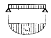
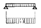
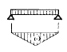
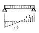
(정답률: 45%)
86. 토공사에서 수량 산출시 흙다지기를 하여 되메우기할 때의 토량 계산방식은?
- (터파기체적 - 기초구조부체적) × 체적변화율 C값
- (터파기체적 - 기초부구조체적) × 체적변화율 L값
- (터파기체적 - 되메우기체적) × 체적변화율 C값
- (터파기체적 - 되메우기체적) × 체적변화율 L값
(정답률: 33%)
87. 12ton 덤프트럭에 토량 환산계수 L값이 1.25인 사질 양토를 적재하려 할 때 1회 적재량은 얼마인가? (단, 자연 상태의 사질양토 단위 중량은 1,800kg/m3이다)
- 약 6m3
- 약 8m3
- 약 10m3
- 약 12m3
(정답률: 47%)
88. 토사의 종류 중 견질토사에 대한 설명은?
- 삽 작업을 위해 상체를 약간 구부릴 정도의 토질
- 삽을 상체의 힘으로 퍼낼수 있는 정도의 토질
- 괭이나 곡괭이를 사용할 정도의 토질
- 호박돌 크기의 돌이 섞이고 굴착에 약간의 화약을 사용해야 할 정도의 단단한 토질
(정답률: 43%)
89. 석재 중 15∼25cm 정도의 정방형 돌로서 주로 전통공간의 포장용 재료나 돌담, 한식건물의 벽체 등에 쓰이는 돌을 무엇이라고 하는가?
- 호박돌
- 간사
- 장대석
- 사고(괴)석
(정답률: 49%)
90. 다음은 목재의 CCA 방부방법에 대한 설명이다. 적합한 것은 어느 것인가?
- 사람이나 가축에 무해한 친환경적 방부법이다.
- 방부효력에 대한 초기효과는 크나 점차 풍화작용에 의하여 효력이 떨어진다
- 목질 세포강도를 증진시켜 접착성, 절삭성이 떨어 진다
- 엷은 녹색을 띄게하며,비바람에도 강하며,수중에서도 효력이 크다
(정답률: 34%)
91. 다음은 돌쌓기 시공에 있어서 안전을 고려할 때의 일반적인 요건이다. 이 중 틀린 것은?
- 압력의 방향에 직각으로 쌓는다.
- 돌이 크고 작은 경우에는 적절히 혼합해서 쌓는다.
- 상하 2층의 세로 줄눈이 연속되지 않게 쌓는다.
- 줄눈 간격은 가급적 작게 한다.
(정답률: 4%)
92. 다음 그림에 관한 설명 중 틀린 것은?
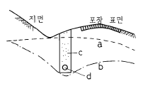
- 차단배수시설이다
- a는 초기, b는 변경된 지하수위이다
- c는 굵은 모래나 모래가 섞인 강자갈이 좋다.
- d는 콘크리트 무공관이다
(정답률: 48%)
93. 다음 중 배수능력이 가장 떨어지며 쉽게 막히기도 하지만 지표면에서 흡수된 물을 배수하기 위한 심토층 배수형태는 다음 중 어느 것인가?
- 오지토관
- 유공관
- 맹암거
- 명거
(정답률: 71%)
94. 시간과 비용의 문제를 동시에 취급하는 선형계획법으로서 공사를 공기내 완공시키면서 공사의 비용이 최소치가 되도록 최적 방안을 강구하는 공정관리 수립 방법은?
- Bar chart
- CPM
- PERT
- Activity
(정답률: 47%)
95. 다음 그림과 같이 콘크리트 담장에서 힘 P에 대한 저항 모멘트는 얼마인가?
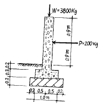
- 280 kg· m
- 320 kg· m
- 1900 kg· m
- 9100 kg· m
(정답률: 28%)
96. 다음 그림과 같은 캔틸레버보 AB에 2tf/m의 등분포하중이 걸릴 때 최대휨모멘트는 얼마인가?
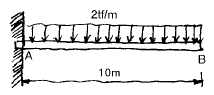
- 50 tf.m
- 100 tf.m
- 200 tf.m
- 400 tf.m
(정답률: 40%)
97. 길어깨(路肩)의 설치 목적 중 틀리게 설명한 것은?
- 긴급 구난시 비상도로로 활용하기 위한 것이다.
- 고장차를 대피시킨다.
- 지하시설물의 설치, 도로의 배수를 위하여 차도에 접속하여 우측에 설치한다.
- 도로 표지를 제외한 노상시설은 설치할 수 없다.
(정답률: 53%)
98. 다음 그림은 기둥의 지지상태를 나타낸 것이다. 기둥의 재질과 단면의 크기가 일정하다고 가정할 때 하중에 가장 강한 순서대로 표기된 것은 어느 것인가?
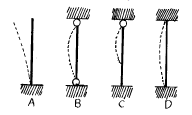
- A＞B＞C＞D
- D＞C＞B＞A
- B＞C＞D＞A
- C＞B＞D＞A
(정답률: 56%)
99. 굴삭, 운반 및 다짐을 할 수 있는 건설 기계는?
- 불도우저
- 로우더
- 리퍼
- 스크레이퍼
(정답률: 60%)
100. 다음은 자재(資材)의 단위수량에 대한 설계서 수량계산에 명시되어 있는 설명이다. 틀린 사항은 어느 것인가?
- 토량에 대한 체적단위는 m3이고, 소수 2자리까지 계산한다
- 떼의 단위는 m2이고 , 소수 1자리까지 계산한다
- 모래와 자갈의 물량은 m3로 하고, 소수1자리까지 계산한다
- 콘크리트의 물량은 m3로 하고, 소수 2자리까지 계산한다
(정답률: 67%)
6과목: 조경관리론
101. 위험물 방치에 의한 이용자 사고에 해당하는 것은?
- 설치하자
- 관리하자
- 이용자 부주의
- 주최자 부주의
(정답률: 60%)
102. 도로,광장등의 간단한 포장이나 비탈면의 처리등 현장에서 흙과 시멘트를 섞어서 간단하게 만든 콘크리트를 무엇이라 하는가?
- 무근콘크리트
- 버림콘크리트
- 소일콘크리트
- 철근콘크리트
(정답률: 22%)
103. 다음 중 공사 감리의 업무 범위가 아닌 것은?
- 안전관리의 지도
- 설계자가 작성한 시공도면의 적합성 검토
- 공정표의 검토
- 설계의 변경에 관한 사항 검토
(정답률: 46%)
104. 가을에 이식한 배롱나무 가지에 새끼를 감는 이유 중 가장 알맞는 것은?
- 가지로부터 수분증산을 막기 위해
- 가지로부터 수분증산 및 동해를 막기 위해
- 병충해를 막기 위해
- 동해와 병충해를 막기 위해
(정답률: 37%)
1⑤. 줄기의 같은 높이에서 서로 반대되는 방향으로 마주 자란 가지를 무엇이라 하는가?
- 도장지(徒長枝)
- 윤생지(輪生枝)
- 평행지(平行枝)
- 대생지(對生枝)
(정답률: 40%)
106. 목재 방부처리 중 효율적인 방법이 아닌 것은?
- C.C.A 방부 처리
- 페인트 도장 처리
- 부틸화유기금속 처리
- 크레오소트 처리
(정답률: 48%)
107. 흡즙성 해충으로 고온 건조시에 주로 발생하여 수목에 피해를 주는 것은?
- 깍지벌레
- 진딧물
- 응애류
- 솔잎혹파리
(정답률: 42%)
108. 원로와 광장을 점검할 때 체크해야 할 내용과 거리가 먼 것은?
- 비가 내린후 물이 고인 곳은 없는가?
- 포장의 파손이 없는가?
- 측구(側溝)에 물이 잘 흐르고 있는가?
- 이용자의 형태별 특성은 어떠한가?
(정답률: 44%)
109. 다음 중 잔디밭의 표층 통기작업으로 사용되는 기계는?
- 레노베이팅
- 레이킹
- 코링
- 버티커팅
(정답률: 32%)
110. 조경시공 현장에서의 자금관리를 위한 기본자료에 포함 되지 않는 것은?
- 공사계약서
- 공사실행예산서
- 작업표준서
- 공사 공정표
(정답률: 37%)
111. 조경공간 및 대상물의 질적변화에 따른 유지관리계획이 필요한 부분은?
- 군식지의 생태적 조건변화에 따른 갱신
- 이용에 의한 손상이 생기는 시설의 보충
- 개방된 토양면의 확보
- 부족이 예측되는 시설의 증설
(정답률: 6%)
112. 녹지(綠地)표면에 물이 고여 정체하고 있어 식물생육에 피해를 주고 있을 경우 대처해야 할 관리방법에서 가장 관계가 적은 것은?
- 표토를 그레이딩(Grading)한다.
- 표토의 토성(土性)및 구조(構造)를 개량한다.
- 지하수위가 낮을 때는 높여 주어야 한다.
- 암거(暗渠)를 매설한다.
(정답률: 47%)
113. 안전사고 방지책에 대한 내용 중에 맞지 않는 것은?
- 구조나 재질에 결함이 있으면 철거하거나 개량 조치를 한다.
- 공원은 휴양, 휴식시설이므로 안전사고는 이용자 자신의 과실이다.
- 위험한 장소에는 감시원, 지도원의 배치를 한다.
- 정기적인 순시 점검과 시설이용 방법을 관찰 지도 한다.
(정답률: 58%)
114. 옥외 레크레이션 관리체계의 기본 요소가 아닌 것은?
- 관리
- 자연자원기반
- 이용자
- 설계자
(정답률: 64%)
115. 조경 시설의 유지관리는 시설의 점검에서 시작된다. 시설을 점검할 때 유의할 사항이 아닌 것은?
- 시설의 당초 목적에 대해 충분한 기능을 발휘 하는가?
- 시설의 수량, 형태에 변화는 없는가?
- 시설의 구조, 강도에 변화는 없는가?
- 시설에 대한 이용자의 선호도는 어떤가?
(정답률: 58%)
116. 다음은 시공계획에 대한 설명이다. 틀린 것은?
- 시공계획 결정 중 검토해야 할 사항은 기본설계도와 기본공정표, 시공법과 시공순서, 시공용 기계설비의 설정 등이다.
- 시공계획 시에는 싸게, 좋게, 안전하게 주어진 공기내에 소요의 품질을 완성하는 것으로 적정한 이윤의 경제성도 고려되어야 한다.
- 시공계획 중 기본계획 단계에서는 시공법의 개요, 시공순서, 경제성 등을 검토, 조사하여 시공 공법과 관련하여 기본방침을 결정한다.
- 시공계획의 내용은 사전조사, 기본계획, 일정계획, 가설계획, 조달계획, 관리계획 등이다.
(정답률: 22%)
117. 노거수목의 관리요령이다. 적절하지 않은 것은?
- 유합조직(callus tissue)의 조기형성을 위해 오렌지 셀락, 아스팔템 페인트 등을 도포한다.
- 메담쌓기(dry well)는 성토 지역에 있어서의 뿌리보호 대책이다.
- 부패된 줄기의 공동(cavity)처리는 충전재료의 선택이 중요하다.
- 공동충전재료는 접착용수지, 유리섬유 등이 있다.
(정답률: 43%)
118. 다음 그림과 같은 Net work에서 주공정일수는 몇 일인가?
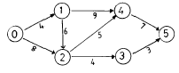
- 20일
- 22일
- 15일
- 25일
(정답률: 36%)
119. 수용능력(carrying capacity) 개념은 원래 어느 분야에서 비롯되었는가?
- 생태계 관리분야
- 환경계획분야
- 환경심리분야
- 레크리에이션 분야
(정답률: 57%)
120. 일반적으로 전정을 하지 않는 수종은?
- 느티나무
- 섬잣나무
- 장미
- 향나무
(정답률: 48%)